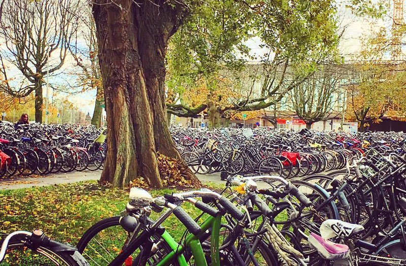
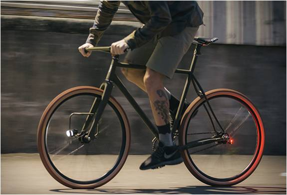
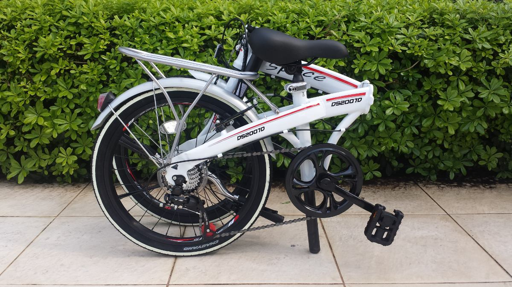
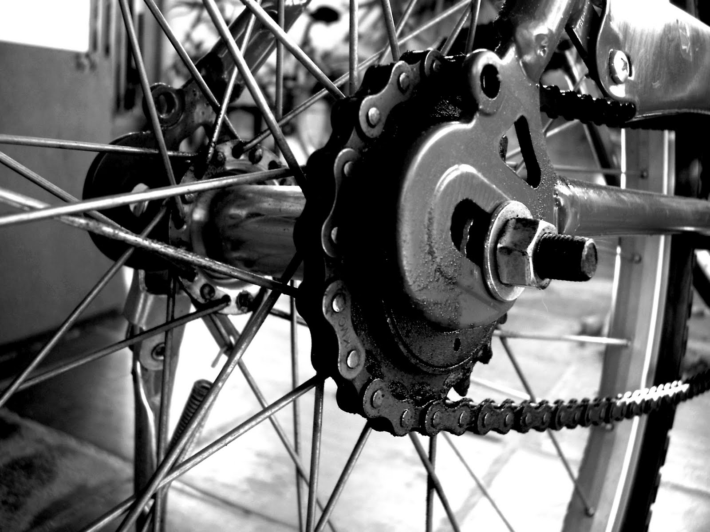
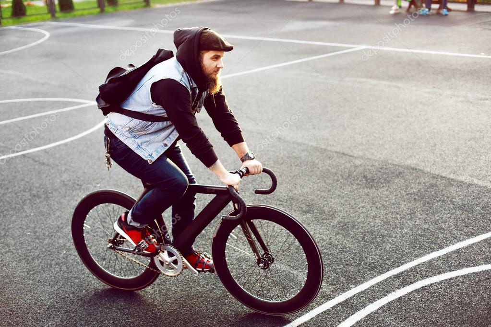
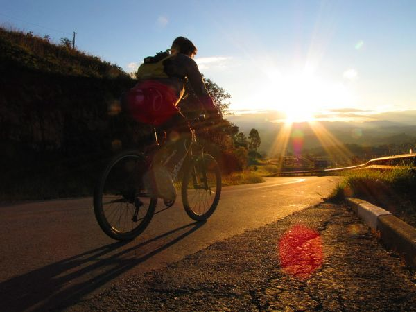
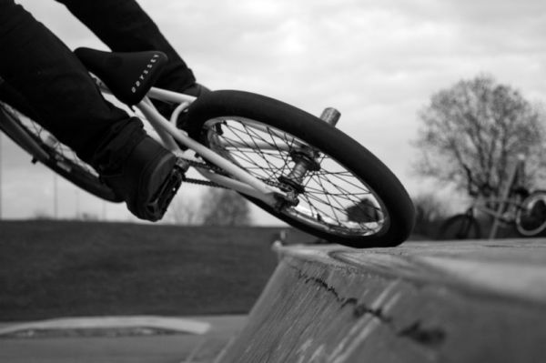
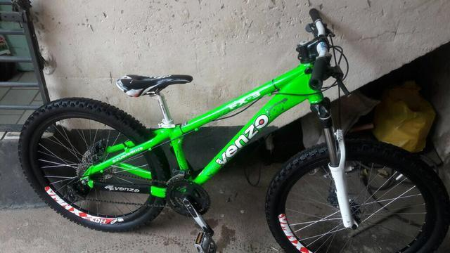
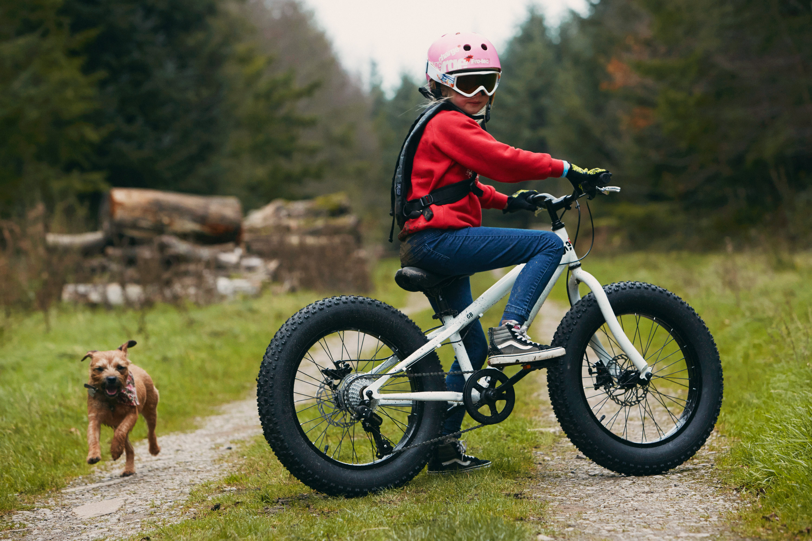
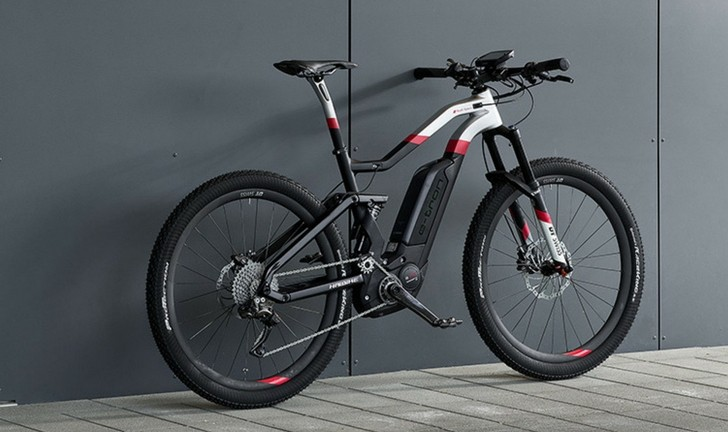

URBANA
Como o próprio nome diz, são bicicletas são ideais para na cidade, perfeitas para pedalar nas ruas, ciclovias ou parques.
As bicicletas urbanas são confortáveis, podem ter bagageiro, para-lamas, farol, lanterna e buzina.
Uma bike urbana tem pneus mais finos e sem cravos e isso proporciona melhor eficiência no asfalto. Além disso, seu selim é mais confortável.

Este tipo de bicicleta proporciona maior estabilidade, pois o ciclista pedala um pouco mais em pé, mas isso por outro lado, dificulta vencer subidas e desempenhar uma boa velocidade.
As urbanas apresentam modelos femininos que vêm equipadas com cestinha no guidão, espelhos retrovisores e desenho de quadro diferente, apropriado para uso com saia, o que facilita as mulheres subirem e descerem da bicicleta.
DOBRÁVEIS
As bikes dobráveis também são muito usadas de forma urbana, pois esse tipo de bike pode ser dobrado, ocupando pouco espaço, podendo ser colocada num cantinho da casa, no porta-malas do carro, embaixo da mesa no trabalho ou transportadas com uma bolsa específica.
Outra vantagem é que as dobráveis podem ser embarcadas, desde que dobradas em diferentes meios de transporte, como ônibus, trens, metrôs e até barcas.
Esse uso da bike atrelado a outros meios de transporte é conhecido como comutação e permite ao ciclista transpor longas distancias com a sua bike.
No metrô de São Paulo e nos trens da CPTM, por exemplo, o embarque com uma dobrável é permitido em qualquer horário, desde que esteja embalada e não ultrapasse a medida de 150 x 60 x 30 cm.
As dobráveis pesam 10 quilos, em média. Alguns modelos, quando dobrados, permitem que se empurre ou puxe a bike utilizando suas próprias rodas, como se fosse uma mala.

Este modelo de bicicleta e menos veloz que as outras, porem e mais facil de carregar para onde você quer que va.
BICICLETA FIXA
As Fixies, como também são conhecidas, tem sua origem inspirada nas bicicletas de velódromo, mas ganharam popularidade em grandes centros urbanos após serem adaptadas para as ruas por ciclistas mensageiros de Nova York e São Francisco que buscavam agilidade e rapidez na locomoção.
A principal característica de uma bike fixa é ter o pinhão fixo na roda traseira.
Ou seja, esta bicicleta não possui roda livre, a roda traseira gira, os pedais também giram, tanto para frente, quanto para trás.
Para andar em uma fixa é necessário pedalar o tempo todo, não tem como parar de pedalar ou ficar na banguela.
Este tipo de bicicleta permite que a frenagem seja feita através do travamento dos pedais com as pernas.
Por isto, outra característica marcante das fixas é ter somente o freio dianteiro e muitos ciclistas acabam até retirando este freio, optando pela frenagem, exclusivamente, com o travamento dos pedais.
A fixa também permite ao ciclista o controle da velocidade da bicicleta de acordo com o ritmo da sua pedalada, podendo desacelerar pedalando mais lentamente.
A bicicleta fixa, por ter mais simplicidade, demanda menos manutenção e é mais leve que as convencionais, pois não tem marchas e ou até sistema de freios .

A pedalada numa bike fixa é muito mais completa do que em outras bikes.
A popularidade das bikes fixas vem crescendo nos últimos anos devido a sua simplicidade, baixa manutenção e visual despojado.
Mountain Bike
As Mountain Bikes ou MTBs – Bicicletas de Montanha são as mais vendidas e mais populares no Brasil, são usadas para qualquer terreno e condição, por isso, em Portugal, são conhecidas como BTT – Bicicletas para Todo Terreno.
As MTBs são adequadas para trilhas em terrenos acidentados, estradas de terra, neve e lama. São equipadas com pneus largos com cravos que oferecerem maior estabilidade em terrenos irregulares ou lama.
Também podem ter sistema de amortecimento, suspensão dianteira, full suspension (dianteira e traseira) ou rígida/hardtail (Sem Suspensão).

Para uso urbano, é ideal a utilização de pneus slick ou semi slick que proporcionam melhor eficiência no asfalto e são adequados para o ciclo turismo.
O quadro e rodas são mais resistentes e câmbio, com até 27 marchas, é ideal para vencer qualquer subida.
SPEED ESTRADA OU CORRIDA
Speed são bicicletas feitas para velocidade, utilizadas em corridas internacionais como Tour de France e Giro de Itália.
São bikes apropriadas para o asfalto ou estrada, pois, por serem leves, desenvolvem boa velocidade.

Pneus finos com alta pressão diminuem a aderência ao solo, o que exige maior técnica e prática do ciclista.
Não é muito recomendada para iniciantes, uso em pisos escorregadios ou em área urbana, pois o pneu fino e liso, é mais propício a furos.
BMX
O BMX do inglês Bicycle(B) Moto(M) Cross(X) também conhecido Bicicross, nasceu das crianças que imitavam seus ídolos do Motocross, construindo pistas e fazendo corridas informais.
A partir dai, desenvolveu-se um tipo bicicleta própria para corrida em pistas de terra similar as de Motocross.
Atualmente o BMX se divide em duas modalidades, o Race (corrida) e o Freestyle (estilo Livre / manobras).
No BMX Freestyle há cinco modalidades: Street, Mini Ramp, Dirt Jump, Flatland e Vertical.

As bicicletas possuem aros 20 e 24 sendo que as de BMX Race têm componentes de menor peso, buscando melhor desempenho e velocidade.
Já as bikes para a prática do BMX Freestyle, como Dirt e Street, têm componentes de maior durabilidade e resistência, o que acarreta um peso maior.
DOWNHILL OU DH
No downhill, o ciclista percorre descidas agressivas e técnicas, passando por diversos tipos de terreno (irregular, natural ou artificial), além de jumps (pontos de salto), gaps (vãos a serem transpostos com ou sem rampa) e drops (grandes degraus onde o ciclista se deixa “cair” para transpor), enfrentando situações de bastante risco.
Em resumo, o downhill não é para iniciantes.
A bicicleta de downhill tem design arrojado e quadro reforçado para suportar grandes impactos, também é mais pesada que as demais e são full suspension (possuem suspensão dianteira e traseira).

A bike de DH não tem câmbio dianteiro, ao invés disso, é instalada uma guia de corrente com a finalidade de manter a transmissão funcionando mesmo com todas as trepidações que a pista transmite para a bicicleta.
A geometria e a posição do quadro da bike com relação ao chão diferem das de outras modalidades. Ela tem a suspensão da frente mais alta, o que provoca uma leve inclinação para trás e ajuda nas descidas acentuadas e também faz com que o ciclista tenha menos probabilidade de cair para frente.
INFANTIL
Destinada às crianças, esse tipo de bicicleta é voltado para quem quer aprender a andar de bicicleta.
Muitas vezes são necessárias as rodinhas traseiras para evitar quedas e tombos dos pequenos.
Essa bicicleta não tem marchas, suspensão ou acessórios sofisticados.
A compra de uma bike infantil deve ser cuidadosa, procure qualidade, veja por exemplo, se os manetes de freio não são duros e difíceis de acionar.
Pense que a finalidade aqui é facilitar e estimular a criança na condução da bicicleta, incentivando a brincadeira, equilíbrio e aprendizado.

lguns modelos de bicicletas infantis não possuem pedivelas e pedais o que facilita a iniciação da criança.
BICICLETA ELETRICA
As bicicletas elétricas (E-Bikes) são movidas parcialmente ou completamente por um motor elétrico que é alimentado por baterias recarregáveis.
O objetivo desta bike é deixar o pedal mais leve para quem não tem preparo físico, a bicicleta elétrica auxilia no percurso de subidas e pode ajudar também no transporte de mercadorias ou até de pessoas.
Ela tem sensores que sustentam o esforço do ciclista somente quando ele está pedalando.

Nos percursos planos, o motor pode fazer o trabalho de movimentar a bicicleta. Nas subidas, o ciclista não precisa pedalar muito, pois é auxiliado pelo motor para vencer o trajeto com menos esforço.
Com velocidades de cerca de 25 km/h, a autonomia da maioria das bicicletas elétricas pode chegar de 30 km/h a 40 km/h.
Agora é só pedalar
Com todos estes tipos e modelos de bicicletas, não há mais desculpas pra você não pedalar.
Seja qual for sua escolha, lembre-se que você será um carro a menos nas ruas, contribuirá com um ar mais limpo e estará fazendo um bem enorme para sua saúde.
Cebrac, R. 13 de maio 2967, Centro, 79002-351, Campo Grande MS.
Turma 18GEW03, programadores de qualidade.
Contatos: cicloevolutiongew@gmail.com
Facebook
Instagram
Twitter